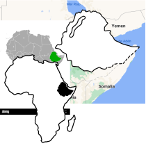

HISTORIA DEL CAFÉ

La historia del café empieza en el cuerno de África, en Etiopía, sobre el siglo IX. Se sabe el origen geográfico, la provincia de Kaffa, pero no el momento exacto, ya que no existen documentos sobre cuándo el hombre empezó a consumir granos de café.
La leyenda cuenta que un miembro de la tribu de Kaldi, habitantes de las zonas de más altitud de Etiopía, observó como las cabras tenían mucha más energía tras comer un tipo de frutos, parecidos a las cerezas. Al probarlas él mismo, descubrió las propiedades energizantes y excitantes y las trasladó a su tribu.
Sea cierta o no esta leyenda sobre el origen del café, de lo que no cabe duda y está documentado es que en el siglo XV había plantaciones en Yemen y un gran comercio de café entre Sudán y Arabia a través del puerto yemení de Moca. Esta ciudad, además de dar nombre a un tipo de café y una cafetera, también era el principal puerto en la ruta hacia La Meca. Allí es donde aparecieron los primeros establecimientos que servían café, los llamados “kaveh kanes”. Estos locales pronto se convirtieron en centros sociales y de actividad política, incluso fueron prohibidos en varias épocas.
La historia del café empieza en el cuerno de África, en Etiopía, sobre el siglo IX. Se sabe el origen geográfico, la provincia de Kaffa, pero no el momento exacto, ya que no existen documentos sobre cuándo el hombre empezó a consumir granos de café.
La leyenda cuenta que un miembro de la tribu de Kaldi, habitantes de las zonas de más altitud de Etiopía, observó como las cabras tenían mucha más energía tras comer un tipo de frutos, parecidos a las cerezas. Al probarlas él mismo, descubrió las propiedades energizantes y excitantes y las trasladó a su tribu.
Sea cierta o no esta leyenda sobre el origen del café, de lo que no cabe duda y está documentado es que en el siglo XV había plantaciones en Yemen y un gran comercio de café entre Sudán y Arabia a través del puerto yemení de Moca. Esta ciudad, además de dar nombre a un tipo de café y una cafetera, también era el principal puerto en la ruta hacia La Meca. Allí es donde aparecieron los primeros establecimientos que servían café, los llamados “kaveh kanes”. Estos locales pronto se convirtieron en centros sociales y de actividad política, incluso fueron prohibidos en varias épocas.

Así pues, la historia del café y su expansión por el mundo tiene a los árabes como protagonistas. Durante unos 200 años tuvieron la exclusiva del cultivo y comercio de café ya que tenían especial cuidado en no propagar granos fértiles de café. Les quitaban las capas exteriores y los tostaban para el comercio. Así pues, era misión imposible plantar un cafeto (la planta del café) en territorios que no estuvieran bajo la influencia árabe.
Los holandeses fueron los primeros europeos en conseguir semillas fértiles, llevarlas a su país y cultivar la planta en invernadero en 1616. Las condiciones climáticas en los Países Bajos no son las más idóneas para el cultivo de café, así que trasladaron estas semillas a otras partes del planeta.
Holanda fue la responsable que empezara el cultivo de café en Asia y partes de América que actualmente son los mayores productores de café del mundo. Entre el siglo XVII y XVIII se comenzó a cultivar café en India y en la isla de Java, en la actual Indonesia. Así mismo, llevaron cafetos a la colonia holandesa de Surinam (Guayana Holandesa) y a Brasil. Las colonias holandesas fueron las grandes suministradoras de café de Europa en el siglo XVIII.
Venecia también tiene un papel en la historia del café en Europa. Si los holandeses fueron los primeros en conseguir semillas para cultivar café, anteriormente fueron los comerciantes venecianos los primeros en introducir la bebida en Europa en 1615 desde Turquía. Al cabo de sólo 40 años se creó la primera cafetería en Londres, y en pocos años (en 1689) aparecieron los primeros establecimientos cafeteros al otro lado del Atlántico, concretamente en la ciudad de Boston.

Ya sabemos cuáles fueron las primeras plantaciones de café, que aparecieron en África y Yemen y como fue la expansión por todo el mundo, con árabes, holandeses y venecianos como grandes protagonistas. Así es cómo nace el café, bebida de consumo habitual en muchas zonas del mundo como Asia, América, países nórdicos, mediterráneos y árabes y en constante crecimiento.
Actualmente se consumen casi 10.000 toneladas de café al año en todo el mundo, casi el doble que hace 35 años. Los mayores consumidores de café son, curiosamente, países nórdicos, con Finlandia en cabeza con 12 kg al año por habitante. Le sigue Noruega, Suecia y Holanda. España aparece en la 19 posición en el ranking mundial de consumo, con 4,5 kg por persona y año, justo por encima de Estados Unidos.